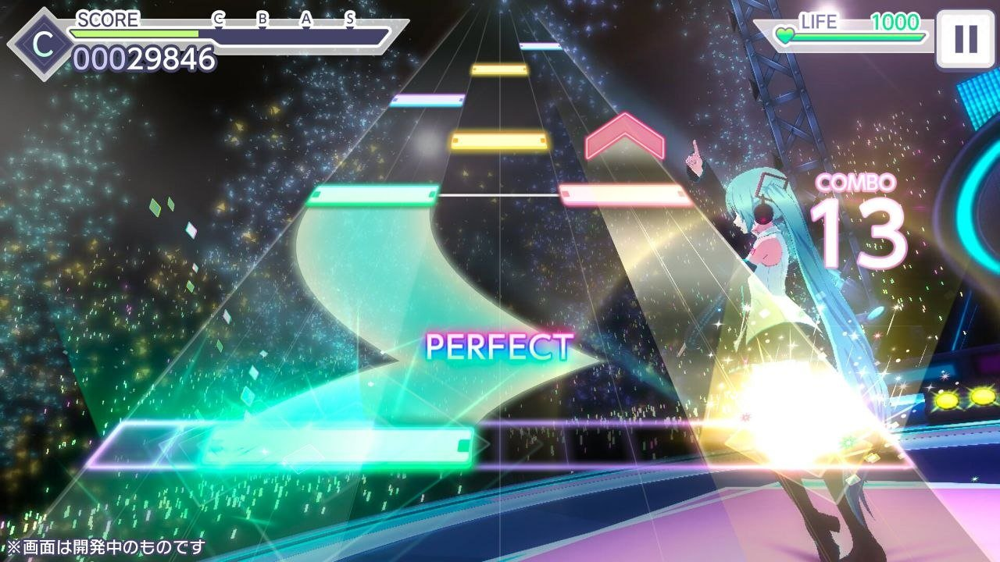

🎤 Сюжет
Сюжет крутится вокруг нескольких музыкальных групп, которые пытаются найти себя и свою музыку, при этом не растеряв друзей по пути.

🎵 Геймплей
Нужно попадать в ритм по клавишам — чем-то напоминает старую игру Piano Tiles.
